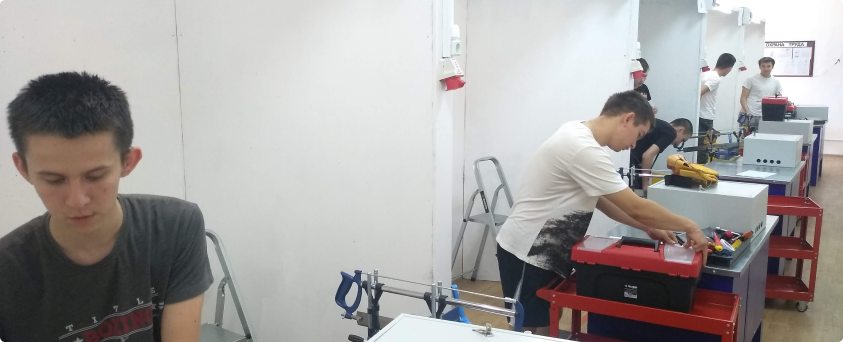
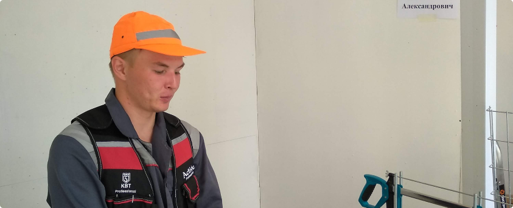

29 июн 2021
Яркая Международная коллекция ремешков для Apple Watch и подходящие к ним циферблаты — ещё один способ показать любовь к стране
Новые яркие спортивные браслеты и подходящие к ним циферблаты, которые можно скачать, — 22 варианта в цветах разных стран
Чтобы поддержать командный дух и порадовать спортсменов и болельщиков, Apple выпустила Международную коллекцию ремешков для Apple Watch: 22 спортивных браслета ограниченной серии в цветах разных стран. Для каждого ремешка можно скачать подходящий циферблат «Полосы»1 и установить его на Apple Watch, чтобы показать, что вы поддерживаете свою страну.
Мягкие, дышащие и лёгкие спортивные браслеты из Международной коллекции представлены в цветах следующих стран: Астралия, Бельгия, Бразилия, Великобритания, Германия, Греция, Дания, Италия, Испания, Канада, Китай, Мексика, Нидерланды, Новая Зеландия, Россия, США, Франция, Швеция, ЮАР, Южная Корея, Ямайка и Япония.
Эми Ван Дайкен (на фото со спортивным браслетом из Международной коллекции в цветах США) — шестикратная олимпийская чемпионка по плаванию. Она увлекается кроссфитом и активно помогает людям с ограничениями по здоровью с тех пор, как получила травму позвоночника. Сама себя она характеризует так: очаровательная чудачка, любящая хозяйка пса по кличке Диллион, перфекционистка и американка, которая гордится своей страной.
«Я всегда считала себя активным человеком, — продолжает Эми, — но теперь, когда меня парализовало, я перестала замечать, как много времени я провожу вне кресла, неподвижно. Два вида тренировок, "Заезд в кресле в темпе ходьбы" и "Заезд в кресле в темпе бега", очень помогают сохранять активность. Они действительно уникальны для нашего сообщества. Здорово, что можно посмотреть, сколько я проехала или сколько толчков руками сделала за день. Те, кто ходит, считают шаги, а мы считаем, сколько раз толкнули коляску — замечательно, что у нас есть свой показатель».
Когда Эми не состязается с сестрой, не занимается кроссфитом в ближайшем спортзале и не гуляет с собакой, она всегда куда-то едет, например на выступление или на встречу с пловцами, выступающими на соревнованиях. Эми Ван Дайкен ни на минуту не расстаётся с Apple Watch. Проснувшись, она открывает приложение Pillow, чтобы проверить качество сна. Затем определяет уровень кислорода в крови с помощью датчика, встроенного в Apple Watch Series 6. Строит маршруты в Картах Apple — без них, как ей кажется, она бы просто заблудилась.